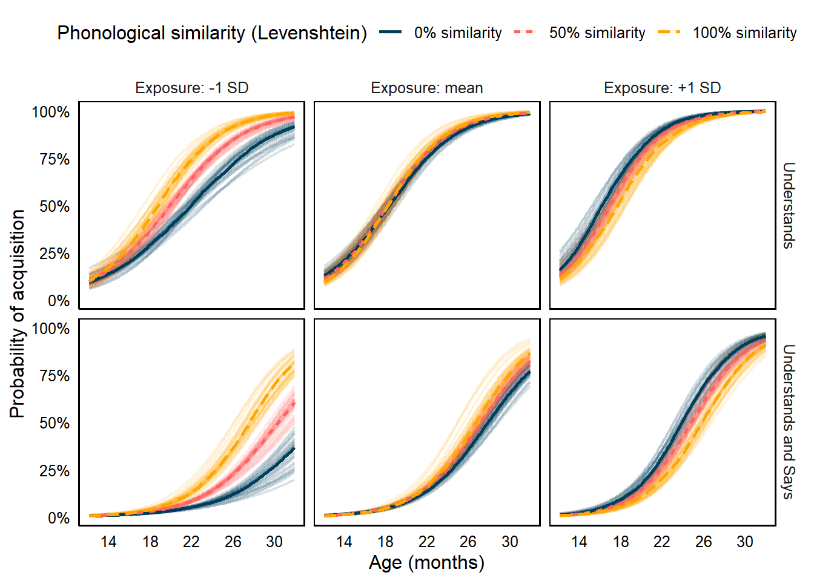

| N | Frequency (Zipf) | Length (Phonemes) | Phon. similarity (Levenshtein) | |||||||
|---|---|---|---|---|---|---|---|---|---|---|
| Mean | SD | Range | Mean | SD | Range | Mean | SD | Range | ||
| Catalan | ||||||||||
| A | 167 | 6.04 | 0.19 | 5.16–6.53 | 5.17 | 1.57 | 2–11 | 37.39% | 26.44% | 0.00%–100.00% |
| B | 150 | 6.02 | 0.19 | 5.16–6.55 | 5.05 | 1.62 | 2–10 | 34.58% | 25.18% | 0.00%–88.89% |
| C | 149 | 6.03 | 0.18 | 5.16–6.55 | 5.17 | 1.59 | 2–9 | 36.86% | 26.94% | 0.00%–100.00% |
| D | 156 | 6.02 | 0.18 | 5.16–6.49 | 5.13 | 1.55 | 2–10 | 36.00% | 26.72% | 0.00%–85.71% |
| Spanish | ||||||||||
| A | 169 | 6.03 | 0.19 | 5.16–6.53 | 5.47 | 1.41 | 3–10 | 37.39% | 26.37% | 0.00%–100.00% |
| B | 157 | 6.03 | 0.19 | 5.16–6.55 | 5.50 | 1.58 | 3–10 | 35.06% | 25.54% | 0.00%–100.00% |
| C | 158 | 6.03 | 0.19 | 5.16–6.55 | 5.53 | 1.56 | 3–10 | 37.34% | 27.04% | 0.00%–100.00% |
| D | 165 | 6.03 | 0.18 | 5.16–6.53 | 5.52 | 1.53 | 3–10 | 36.53% | 26.85% | 0.00%–100.00% |
Introduction
Word acquisition during toddlerhood: the effect of language experience
The foundations of word learning are in place early in age. Before the end of their first year of life infants start directing their gaze to some objects when hearing their labels, according to both experimental data [@jusczyk1995infants; @tincoff1999some; @bergelson2012months; @bergelson2015early] and parental vocabulary reports [e.g., @fenson2007macarthur]. During the last half of their second year, new word forms are acquired at an increasingly fast rate [@goldfield1990early; @fenson1994variability; @mayor2011statistical; @bloom2002children; @bergelson2020comprehension]. These early stages of lexical acquisition are characterised by substantial variation across children. This is reflected, for instance, on the variability of the number of words they know [i.e. vocabulary size, @fenson1994variability; @frank2021variability] or on the proportion of acquired words that fall into the category of nouns, as opposed to verbs, adjectives, or function words [e.g., @nelson1973structure, @bates1994developmental].
Despite this variability, children’s trajectories of vocabulary growth seem quite stable across languages. @tardif2008baby collected data about the first ten words acquired by 10 to 16 month-old infants living in the United States, Hong Kong, and Beijing. Since birth, these infants had been learning English, Cantonese and Mandarin, respectively. The authors found a common pattern across the three groups: their first ten words referred to roughly the same concepts, namely relatives/caretakers (daddy, mommy), social routines (bye, uh-oh) or animals (woof-woof). These results were later extended by @frank2021variability to a wider diversity languages, also reporting that such cross-language commonalities are stronger at earlier stages of lexical acquisition, compared to later stages. Most of the literature on early word acquisition, however, has been conducted on monolingual children, and neglects the problem of how bilinguals–who represent a substantial proportion of the population in most societies–acquire words at early ages.
Previous findings point to bilingual toddlers knowing, on average, less words in each of their languages than their monolinguals peers, but also to both groups knowing a similar amount of words when the two languages are aggregated. For example, @hoff2012dual found that English-Spanish bilingual toddlers in South Florida knew less words in English than monolinguals, who only learnt English. Both groups knew a similar total amount of words when both English and Spanish vocabularies were counted together, highlighting the importance of collecting data on both languages when assessing bilinguals’ communicative development. Other studies have provided converging evidence that bilinguals know a similar–or even larger–number of words than monolinguals, only when the languages are aggregated [@oller2002language; @pearson1994patterns; @pearson1993lexical; @patterson2004comparing; @patterson2004bilingual; @smithson2014bilingualism; @petitto2001bilingual; @gonzalez2020bilingual]. While these studies have mostly relied on samples of bilingual children learning two relatively distant languages, as it is the case of English and Spanish, it is unclear whether children learning typologically more similar languages also know less words in each of their languages than monolinguals. What role could linguistic distance play during early vocabulary growth?
Language distance as a mediator of bilingual vocabulary growth
For a given set of concepts, bilingual children may be exposed to two distinct sets of word-forms–one in each language. Depending on the linguistic distance between both languages, the two sets of words may overlap in varying degrees. Particularly, when both languages are typologically close, like Spanish and Catalan (both Roman languages), they are more likely to share a large amount of cognates (i.e., form-similar translation equivalents) than two typologically distant languages, like Spanish and English (one Romance, the other Germanic). For instance, in the presence of a door, a Spanish-Italian (or a Spanish-Catalan) bilingual might hear puerta and porta (cognates), whereas a Spanish-English bilingual might hear puerta and door (non-cognates). It could be the case that mapping two phonologically similar labels (cognates like puerta-porta) onto the same referent is easier than doing the same with two phonologically dissimilar labels (non-cognates, like puerta and door). If cognates are easier to acquire than non-cognates, bilinguals learning a pair of languages that share a high proportion of cognates should benefit more often from this facilitation effect than those learning a pair of languages with a lower proportion of cognates, and should therefore show larger vocabulary sizes.
@floccia2018introduction provided evidence in line with this claim. The authors collected vocabulary data on word comprehension and production from 372 24-month-old bilingual toddlers living in the United Kingdom who were learning English and an additional language. The additional language was one a pool of 13 typologically diverse languages: Bengali, Cantonese Chinese, Dutch, French, German, Greek, Hindi/Urdu, Italian, Mandarin Chinese, Polish, Portuguese, Spanish and Welsh. The authors calculated the average phonological similarity between the words in each of these additional languages and their translation equivalents in English. Phonological similarity was measured by computing the Levenshtein distance between each cross-language pair of phonological transcriptions. The Levenshtein distance is a metric that computes the edit distance between two strings by counting the smallest number of insertions, deletions and substitutions one of the strings has to go through to become identical to the other [@levenshtein1966binary]. The resulting scores were then divided by the length of the longest string to bound the similarity scores between 0 and 1, and then entered this variable as a predictor as they modelled participants’ vocabulary sizes. Among other findings, the authors reported an increase in productive vocabulary size in the additional language associated with an increase in the average phonological similarity between the translation equivalents of each language pair. For example, English-Dutch bilinguals (22.14% phonological similarity), were able to produce more Dutch words than English-Mandarin bilinguals (1.97% phonological similarity) were able to produce in Mandarin.
Lexical non-selectiviy as a candidate acount: the role of parallel activation
Floccia et al. pointed to parallel activation as the main phenomenon underpinning their results. The parallel activation hypothesis suggests that bilinguals activate both languages simultaneously during speech production or comprehension, and that this phenomenon is the result of the activation of lexical representations in both languages, even when only one is in use during production [@costa2000cognate; @hoshino2008cognate] or comprehension [@spivey1999cross; @thierry2007brain]. One of the clearest examples of parallel activation was provided by @costa2000cognate. In this study, Catalan-Spanish monolingual and bilingual adults were asked to name pictures of common objects in Spanish. In half of the trials, the object labels were cognates in Spanish and Catalan (árbol-arbre, translations of tree), whereas in the other half of the trials labels were non-cognates (mesa-taula, translations of table). Bilinguals named cognate pictures faster than non-cognate pictures, even after adjusting for the lexical frequency of the items. Importantly, Spanish monolinguals–unfamiliar with the Catalan translations of the Spanish words they uttered–did not show this effect. These results suggest that bilinguals’ Catalan phonology was activated during the production of Spanish words, facilitating the naming of cognate pictures. Several subsequent studies have also provided similar evidence in comprehension in children [e.g., @von2012language; @poulin2013lexical]. Parallel activation is therefore a plausible explanation for Floccia et al.’s results: cognateness increases the amount of cross-language activation, facilitating word acquisition, and ultimately leading to children learning language pairs with a larger proportion of cognates are predicted to show larger vocabulary sizes. This account is is line with previous studies suggesting that the acquisition of new words is facilitated by their phonological or semantic similarity with other words, already acquired or not [e.g., @hills2009longitudinal; @fourtassi2020growth; @laing2022phonological; @jones2019children]. Importantly, bilinguals seem to be more likely to acquire words for which their translation equivalent has been already learnt in the other language, suggesting that semantic similarity also facilitates word acquisition across languages [@bilson2015semantic].
If phonological similarity also plays a cross-language facilitation role during word acquisition, cognate translation equivalents–which share both semantic and phonological similarity–should be acquired earlier that non-cognate translation equivalents–which share semantic similarity, but not phonological similarity. Evidence supporting and earlier age of acquisition for cognates is scarce. @bosch2014first used vocabulary parental reports (152 lexical items) from 48 Catalan-Spanish bilinguals aged 18 months, and found that cognates represented a larger proportion of participant’s vocabulary than non-cognates. @schelletter2002effect reported a longitudinal single case of one English-German bilingual who produced cognates earlier than non-cognates, on average. The low sample size in these two studies makes it challenging to draw strong conclusions about the effect of cognateness on vocabulary growth. On the other hand, Floccia et al.’s estimates are statically more reliable given their (much larger) sample size, but their study was not aimed at testing the effect of cognateness on age of acquisition directly. In their discussion the authors state the following (pp. 70):
“This finding also provides support to the proposal that the cognate advantage is due to cognates being acquired before non-cognates in early childhood (Costa et al., 2016), leading to an ease of processing later in life.”
We identify two main reasons why an earlier age of acquisition for cognates than for non-cognates is an unwarranted conclusion from Floccia et al.’s results. First, the response variable used was the proportion of words each participant understood and/or produced (i.e., vocabulary size), from the list of lexical items in the vocabulary checklists. By aggregating the responses from all items into a single datum per child, information about the acquisition status of cognates vs. non-cognates was lost. Second, all participants were aged ~24 months, meaning that even if the unaggregated responses to individual items were included as response variable, the possible effect of cognateness could only be interpreted as an increase or decrease in the likelihood of participants at such age to have acquired each item, and not as an increase or decrease in the age of acquisition of such item.
More recently, @mitchell2022cognates addressed this issue overcoming some of these pitfalls. Using a larger, longitudinal sample of 47 16-to-30 month-old French-English bilinguals living in Canada, the authors collected data on expressive vocabulary data in both languages. They created two lists of translation equivalents: one made of 131 cognates, and one made of 406 non-cognates. The proportion of translation equivalents that children were reportedly able to produce was higher in the cognate lists than in the non-cognate list across ages, even when both lists were matched by semantic category (furniture, animals, food were similarity represented in both lists) and age of acquisition norms (an index of word difficulty). These findings shed some light on the ongoing exploration of why (if at all) bilinguals’ vocabulary size grows faster when both languages are phonologically more similar: word-forms sharing more phonemes with their translation equivalents (i.e., cognates) seem to be acquired faster.
Two competing mechanisms for a cognate facilitation during word acquisition
The facilitative effect of cognateness on word acquisition can be explained by at least two arguably incompatible mechanisms. On the one hand, and in line with @mitchell2022cognates, cognateness might operate at early stages of word acquisition, before stable representations of any of the word-forms of the translation equivalent have been formed. In this scenario, recognising any of the two word-forms as familiar might lead to the activation of its (cognate) translation in the other language via their phonological similarity. Given that both word-forms are likely to be heard in the presence of the same referent, the association between each form and such reference could be facilitated by the exposure to either of them.
For instance, hearing flower in English might activate floeur in French, and vice versa. Repeated exposure to the English or the French words, and therefore to similar -sounding words in the presence of eventually leads to an earlier acquisition for both of them, as compared to non-cognate translation equivalents like cow and vache, which do not activate each other via phonological similarity. If this is the case, then cognateness should increase the probability of acquisition of the word-forms in both languages equally.
Another possibility is that cognateness plays a role in the acquisition of a translation pair only when at least one of the word-forms has been acquired. This account departs from the premise that phonological similarity operates at the lexical level to facilitate word learning across languages: if the child has still not formed a lexical representation with sufficient phonological detail for one of the word forms, the acquisition of its translation in the other language cannot be facilitated by cognateness. This implies that, if cognateness facilitates the acquisition of a word form, it can only do so after the child has acquired one of the word forms of the translation pair. Given that children are more likely to acquire words from languages to which they are exposed more often [@david2008individual; @cattani2014much; @thordardottir2006bilingual], the acquisition of words in the language of lower exposure should, on average, be more susceptible to the effect of cognateness.
In line with this second hypothesis, the size of the effect of linguistic similarity on vocabulary size that Floccia et al. reported was larger in the additional language (language of lower exposure) vocabulary than in English vocabulary (language of higher exposure. Most participants in their sample were English-dominant, meaning that their relative amount of exposure to English was larger than in the additional language. Therefore, participants may have, on average, learnt the English word-form of translation equivalents earlier than the word-form in the additional language. If this is the case, then the acquisition of English words by English-dominant participants would rarely benefit from their cognate status (the other word-form is not available yet), while the acquisition of words in the additional language would benefit from their phonological similarity with the (available) English form.
The present study
In this study, we investigated the role of cognateness on the acquisition of translation equivalents, and if such effect is conditional to the amount of time the child is exposed to the corresponding language of each member of the translation pair. Using an online vocabulary checklist–designed specifically for this study–we collected data from a sample of children aged 12 to 31 months learning Catalan and/or Spanish, with varying degrees of exposure to each language. We then adopted an Bayesian item response theory (IRT) approach to model the probability of participants being reported by their parents to understand or understand and say each word in the checklist, conditional to its cognate status in Catalan and Spanish and participants’ degree of exposure to the corresponding language, while adjusting for other indices of word difficulty–lexical frequency [@goodman2008does] and length (phonemes)– and participant skill–age [see @kachergis2022toward for a similar approach].
Methods
Participants
We collected data from 384 children from the Metropolitan Area of Barcelona between 28th October, 2019 and 31th October, 2022. All families gave informed consent before participating and this study was approved by the Comitè d’Ètica de la Investigació amb Medicaments (CEIm) from Hospital del Mar (Barcelona, Spain), code XXXXXXXXX. Families from the participant database of the Laboratori de Recerca en Infància of the Universitat Pompeu Fabra were contacted by e-mail or phone if their child were aged between 12 and 31 months, and had not been reported to be exposed more than 10% of the time to a language other than Spanish or Catalan. Upon consent, families were sent a link to the questionnaire via e-mail, which they filled from a computer, laptop, or mobile device in a browser within the two week following the invitation to participate. Table 1 summarises the distribution of participants across ages and degrees of exposure (DoE) to Catalan.
Table 1: Participant sample size by age and degree of exposure to Catalan.
| DoE Catalan1 | Age (months) | ||||||
|---|---|---|---|---|---|---|---|
| [10,14] | (14,18] | (18,22] | (22,26] | (26,30] | (30,34] | ||
| 75-100% | 17 | 25 | 37 | 39 | 22 | 6 | |
| 50-75% | 8 | 13 | 27 | 39 | 22 | 2 | |
| 25-50% | 10 | 16 | 48 | 29 | 24 | 1 | |
| 0-25% | 6 | 12 | 21 | 19 | 9 | 1 | |
| Total | — | 41 | 66 | 133 | 126 | 77 | 10 |
| 1 This proportion is complementary to the degree of exposure to Spanish, with the exception of those participants who were also exposed to a third language up to 10% of the time | |||||||
We used the highest educational attainment of parents or caretakers as a proxy of participants’ socio-economic status (SES), which families self-reported in the questionnaire by filling two items asking for the educational attainment of each parent or caretaker, with the following available options: No education, Primary, Secondary, Complementary, Vocational, and University, in line with the current educational system in Spain. Most families reported university studies (366, 0.953125), followed by families were the highest educational attainment were vocational studies (66, 17%), complementary studies (6, 2%), secondary education (8, 2%, 0%), no formal education (2, 1% and primary education (1, <1%).
Questionnaire
To collect vocabulary data from participants, we created an ad hoc questionnaire, MultiLex [@multilex]. This questionnaire was inspired in the MacArthur-Bates Communicative Development Inventory [@fenson2007macarthur] and its adaptations to other languages, and was implemented on-line using the formR platform [@arslan2020formr]. This questionnaire is structured in three blocks: a (1) language questionnaire, a (2) demographic survey, and a (3) Catalan and a Spanish vocabulary checklists. Vocabulary checklists followed a similar structure as the Oxford Communicative Developmental Inventory [@hamilton2000infant] and consisted in two lists of words: one in Catalan and one in Spanish. The Catalan inventory contained 793 items and the Spanish inventory contained 797. Items in one language were translation equivalents of the items in the other language (e.g., whenever gos [dog] was included in the Catalan inventory, the word perro was included in the Spanish inventory), roughly following a one-to-one mapping. In case two translation equivalents were possible for a given word, both were included as separate items (e.g., Catalan acabar [to finish] and Spanish acabar and terminar), or merged them into a single item (e.g., Spanish mono [monkey] and Catalan mono/mico). We included items from a diverse sample of 26 semantic/functional categories.
For each word in the vocabulary checklists, we asked parents to report whether their child was able to understand it, understand and say it, or did not understand or say it (checked out by default). Some families filled a long version of the vocabulary checklists (797 translation equivalents; 793 items in Catalan, 797 items in Spanish), while others filled a shorter version (~400 translation equivalents, ~400 items in Catalan, ~400 items in Spanish). These last families were randomly allocated into one of four different subsets of the complete list of items. These lists were designed so that each contained a representative sub-sample of the items from the complete list. Semantic/functional categories with less than 16 items–thus resulting in less than four items after dividing it in four lists–were not divided in the short version of the questionnaire: all of their items were included in the four lists. Another subset of items that were part of the trial lists of some experiments in the lab were also included in all versions. For the analyses in the present study, we considered responses to words corresponding to nouns, verbs, and adjectives [@fourtassi2020growth]. We excluded multi-word items (e.g., barrita de cereales [cereal bar]) and items that included more than one word-form (e.g., mono/mico).
Variables of interest
We extracted four variables of interest for each word-form. (1) Word lexical frequency (\(Frequency\)): lexical frequency of the word in its corresponding language, expressed as Zipf scores [@van2014subtlex; @zipf1949human]. This variable ranges from 0 to 7, and follows and approximates a normal distribution, with most values in a corpus ranging from 3 to 5 points. Lexical frequencies were extracted from an adult subtitle-based database: SUBTLEX-CAT [@boada2020subtlex] for Catalan words and SUBTLEX-ESP [@cuetos2012subtlex] for Spanish words. Using child-based estimates of lexical frequency like CHILDES was not possible due to the low number of Catalan participants and tokens in the available corpora. (2) Word length (\(Phonemes\)): number of phonemes in the phonological transcription of the word-form in International Phonological association format. (3) Phonological similarity (\(Levenshtein\)): normalised Levenshtein similarity between the word-form and its translation in the other language [@levenshtein1966binary]. This score is calculated by first calculating the Levenshtein distance between the two transcriptions (number of insertions, deletions or replacements needed for the shortest transcription to become identical to the longer transcription), then dividing the resulting value by the length of the longest transcription, and finally subtracting this value from 1. This results in a proportion that indicates how much the two phonological transcriptions of the translation equivalent are similar to each other, ranging from 0% (no similarity at all) to 100% (both transcriptions are identical) [see @floccia2018introduction; @fourtassi2020growth; @laing2022phonological for similar approaches]. (4) Participant age: number of months elapsed between participants’ birth date and questionnaire completion. Finally, (5) participant degree of exposure to the words’ language (\(DoE\)): percentage of exposure to the language the word belonged to. For example, for a participant with 90% exposure to Catalan, and 10% to Spanish, the DoE of the Catalan word taula would be 90%, and the DoE for the Spanish word mesa would be 10%. Table 2 shows a summary of the distribution of the word-level predictors across languages in and questionnaire versions.
Data analysis
We gathered 138,488 observations, with each observation corresponding to a single response of one participant to a given item in the questionnaire). These observations correspond to 367 distinct participants (of which 314 participated once, 41 twice, 8 three times, and 4 four times), responding to 603 distinct items (299 in Catalan, 304 in Spanish, 304 translation equivalents). Translation equivalents (TEs) received a median of 232 responses (Min = 106, Max = 872), both languages summed together.
We modelled the probability of answering each response category (No < Understands < Understands and Says) using a Bayesian, mixed-effects ordinal regression model (4 sampling chains with 500 iterations each). This model allowed us to estimate both item and participant word-acquisition trajectories, as a function of different fixed effects from \(Age\), \(Frequency\), \(Phonemes\), \(DoE\), and \(Levenshtein\). We also included participant and item random intercepts and slopes when appropriate [@barr2013random] see 6.1. We compared a baseline model \(\mathcal{M}_{0}\), which only included the intercept, \(Age\), \(Frequency\), \(Phonemes\), and \(DoE\) as predictors, with increasingly more complex models, introducing predictors in the following order: \(Age \times DoE\) (\(\mathcal{M}_{1}\)), \(Levenshtein\) (\(\mathcal{M}_{2}\)), \(DoE \times Levenshtein\) (\(\mathcal{M}_{3}\)), and finally \(Age \times Levenshtein\) and \(Age \times DoE \times Levenshtein\) (\(\mathcal{M}_{4}\)). We compared the predictive performance of the models using Bayesian leave-one-out cross-validation [LOO, @vehtari2017practical]1, and selected for interpretation the one showing the best performance.
We assessed the practical relevance of the estimated regression coefficients of the selected model by specifying a region of practical equivalence [*ROPE*, @kruschke2018bayesian] from -0.1 to +0.1 see 6.3. This region indicates the range of values that we considered as equivalent to zero. The degree of overlap between the posterior distribution of a regression coefficient with the ROPE can be interpreted as support for the true parameter of the coefficient being zero. In the results section, we report the 95% highest density interval (HDI) of the posterior distribution of each regression coefficient. This is interval contains the true value of this coefficient with 95% probability, given our data. We also report the proportion of posterior samples in the 95% HDI that overlap with the ROPE, which indicates the probability that the true value of the regression coefficient falls into the ROPE, and should therefore be considered equivalent to zero2.
Data processing and visualisation was done in R [@R-base] using the tidyverse family of packages [@R-tidyverse], Bayesian modelling was done using the brms [@burkner2017brms; @carpenter2017stan], loo [@loo], and tidybayes [@tidybayes] R packages. Data and materials are available at OSF https://osf.io/hy984/, and code is available at GitHub https://github.com/gongcastro/trajectories.
Results
Model comparison and selection
The extended model (\(\mathcal{M}_{4}\)), which included the three-way interaction between \(Age\), \(DoE\), and \(Levenshtein\) showed the best predictive performance, with a difference in expected log-predicted density (ELPD) compared to the other models several times larger than the standard error of such difference see 3. This indicates that, given the data, the predictions of the \(\mathcal{M}_{4}\) are confidently more accurate than those of the other models.
| Model | LOOELPD | LOOp | LOOIC | LOOdiff | ||||
|---|---|---|---|---|---|---|---|---|
| ELPD | SE | p | SE | LOO-IC | SE | diff | SE | |
| 4 | −143,058.13 | 319.55 | 1,548.11 | 6.32 | 286,116.26 | 639.10 | 0.00 | 0.00 |
| 3 | −143,129.18 | 319.41 | 1,484.72 | 5.58 | 286,258.36 | 638.82 | −71.05 | 42.98 |
| 2 | −143,569.91 | 320.73 | 1,592.23 | 5.90 | 287,139.82 | 641.47 | −511.78 | 66.67 |
| 1 | −143,659.36 | 315.38 | 1,267.71 | 5.38 | 287,318.72 | 630.76 | −601.23 | 60.60 |
| 0 | −144,812.68 | 315.50 | 890.44 | 3.04 | 289,625.36 | 631.01 | −1,754.55 | 84.70 |
| Pareto-k estimates of all models were acceptable (k < 0.5) | ||||||||
Regression coefficients
Table 4 shows the summary of the posterior distribution of the fixed regression coefficients of the selected model. For interpretability, we supplement the summaries of each posterior regression coefficient with its transformation to the probability scale. The resulting values correspond to the maximum difference in probability of acquisition (Comprehension or Comprehension and Production) that corresponds to a one standard deviation change in each predictor3.
| Parameter | Median | 95% HDI | ROPE prob. |
|---|---|---|---|
| Intercept (Comprehension and Production at 22 months) | −1.32 | [−1.44, −1.20] | 0.00% |
| Intercept (Comprehension at 22 months) | 1.62 | [1.50, 1.74] | 0.00% |
| Age (+1 SD, 4.81 months) | 1.55 | [1.36, 1.73] | 0.00% |
| NA | 0.80 | [0.67, 0.95] | 0.00% |
| Levenshtein (+1 SD, 26%) | 0.09 | [−0.07, 0.25] | 56.74% |
| Phonemes (+1 SD, 1.56 phonemes) | −0.30 | [−0.40, −0.19] | 0.00% |
| NA | 0.28 | [0.13, 0.44] | 0.00% |
| Age × Levenshtein | 0.05 | [−0.01, 0.11] | 97.26% |
| NA | −0.23 | [−0.27, −0.18] | 0.00% |
| NA | −0.08 | [−0.11, −0.04] | 88.47% |
\(Age\) was the predictor with the largest effect on the probability of acquisition (\(\beta\) = 1.55, 95% HDI = [1.36, 1.73]): at the steepest point of the acquisition trajectory of an average translation equivalent, the probability of acquisition increased 8.05% every month. Lexical frequency (\(Frequency\)) had a small, positive, but inconclusive on the probability of acquisition substantially, (\(\beta\) = , 95% HDI = [, ]): of its posterior samples overlapped with the ROPE. The 95% HDI of the regression coefficient of the number of phonemes (\(Phonemes\)) did exclude the ROPE, although not by much: 0.00% of its posterior samples fell within the ROPE. This suggests that the number of phonemes in the word form had a small effect on the probability of acquisition (\(\beta\) = -30.13%, 95% HDI = [-40.11%, -18.91%]). For every increase in phoneme length, the probability of acquisition decreased in -4.83%.
The degree of exposure to the language (\(DoE\)) had a strong effect on the probability of acquisition (\(\beta\) = , 95% HDI = [, ]). All of the posterior samples of his regression excluded the ROPE. The impact of this predictor on the probability of acquisition was positive: for every 10% increase in exposure to the language the word belongs to, the participant was more likely to acquire it. The effect of phonological similarity by itself (as indicated by the regression coefficient of the main effect of \(Levenshtein\)) was equivalent to zero (\(\beta\) = 8.72%, 95% HDI = [-6.69%, 25.04%]), as 56.74% of the posterior samples of its regression coefficient fell into the ROPE. However, the 95% HDI of the regression coefficient of the \(Doe \times Levenshtein\) interaction excluded the ROPE entirely (\(\beta\) = , 95% HDI = [, ]), suggesting that the effect of phonological similarity on a word’s probability of acquisition changed depending on participants’ exposure to the language it belonged to. Follow up analyses on this interaction (see Figure 1) showed that, when exposure to the language was low (e.g., 10%), phonological similarity increased the probability of acquisition substantially. This effect was negligible when exposure to both languages was balanced (e.g. 50-50%). Finally, when exposure to the language was high (e.g., 90%), this effect was very close to zero, although with different direction, with phonological less similar translation equivalents being more likely to be acquired than phonologically more similar ones.
The 95% HDI of the regression coefficient of the \(Age \times DoE\) interaction did not exclude the ROPE (\(\beta\) = , 95% HDI = [, ]): of its posterior samples fell within the ROPE. This shows that the effect of the degree of exposure on the speed at which participants acquired word across ages was inconclusive. Give our data, it is difficult to tell whether this DoE increased or decreased the slope of the words’ acquisition trajectories. The 95% HDI of the regression coefficient of the \(Age \times Levenshtein\) interaction overlapped completely with the ROPE (\(\beta\) = 5.20%, 95% HDI = [-0.70%, 10.67%]), indicating that phonological similarity did not speed-up the acquisition trajectories of the words across ages. Finally, the 95% HDI of the regression coefficient of the \(Age \times DoE \times Levenshtein\) interaction also overlapped completely with the ROPE (\(\beta\) = , 95% HDI = [, ]), suggesting that the impact of the degree of exposure to the language on the effect of phonological similarity did not differ substantially across ages.
nd <- datagrid(
model = model_fit_4,
age_std = seq_range(model_fit_4$data$age_std, n = 100),
lv_std = (seq(0, 1, 0.5)-mean(df$lv))/(sd(df$lv)),
exposure_std = c(-1, 0, 1),
te = NA,
id = NA
)
marg_epreds <- predictions(
model_fit_4,
newdata = nd,
ndraws = 25,
re_formula = NA
)
marg_epreds %>%
posteriordraws() %>%
as_tibble() %>%
select(drawid, group, draw, age_std, lv_std, exposure_std) %>%
filter(group != "No") %>%
pivot_wider(
id_cols = c(drawid, age_std, lv_std, exposure_std),
names_from = group,
values_from = draw
) %>%
mutate(`Understands` = `Understands and Says` + `Understands`) %>%
pivot_longer(c(`Understands`, `Understands and Says`), names_to = "group", values_to = "draw") %>%
mutate(
exposure_std = factor(
exposure_std,
levels = unique(nd$exposure_std),
labels = c("Exposure: -1 SD", "Exposure: mean", "Exposure: +1 SD")
),
lv_std = factor(
lv_std,
levels = unique(nd$lv_std),
labels = paste0(c(0, 50, 100), "% similarity")
)
) %>%
ggplot(aes(age_std, draw, colour = lv_std, fill = lv_std)) +
facet_grid(group~exposure_std) +
# stat_summary(fun.data = median_hdi, geom = "ribbon",
# alpha = 0.5, colour = NA) +
geom_line(aes(group = interaction(lv_std, drawid)),
size = 0.75, alpha = 0.15) +
stat_summary(aes(linetype = lv_std), fun = median, geom = "line", size = 1) +
labs(
x = "Age (months)",
y = "Probability of acquisition",
linetype = "Phonological similarity (Levenshtein)",
colour = "Phonological similarity (Levenshtein)",
fill = "Phonological similarity (Levenshtein)"
) +
scale_colour_manual(values = clrs[c(1, 4, 5)]) +
scale_fill_manual(values = clrs[c(1, 4, 5)]) +
scale_y_continuous(
breaks = seq(0, 1, 0.25),
limits = c(0, 1),
labels = percent
) +
scale_x_continuous(
breaks = (seq(10, 32, 4)-mean(df$age))/(sd(df$age)),
labels = seq(10, 32, 4)
) +
theme(
legend.position = "top",
panel.grid = element_blank(),
panel.border = element_rect(fill = NA, colour = "black", size = 0.75)
)
Discussion
Summary of the study
- This study explored how word acquisition is affected by cognateness in bilingual toddlers.
- We collected vocabulary data from children learning Catalan and/or Spanish in differing degrees of exposure to each, and then measured the probability of each word being acquired at different ages as a function of (1) participants’ exposure to the language it belongs to, and (2) its phonological similarity with its translation equivalent in the other language.
- Using item response theory (IRT), we built an Bayesian model that estimated the effect of both predictors and their interaction, adjusting for other variables known to be relevant for the acquisition of words: participants’ age, lexical frequency, and word length in phonemes.
Summary of results and contrast with the literature
- We replicated effects reported in previous studies, such as age being the most determinant predictor of word acquisition, followed by exposure to the language, that frequent words are acquired earlier, and that word length predicts a later age of acquisition.
- Regarding our hypotheses, we found strong evidence for a two-way interaction between language exposure and phonological similarity: participants were more likely to acquire word-forms from cognate translation equivalents than from non-cognate translation equivalents, but only when their exposure to the language of such word-form was low.
- Our results converge with previous findings indicating that phonological similarity between translation equivalents plays a facilitation role in word acquisition, but suggest that this effect is mostly, or only present in participants’ language of lower exposure.
Mechanistic explanations
- These findings support the hypothesis that the cognate facilitation effect on word acquisition is more likely to play such role after one of the word-forms of the translation equivalent has been acquired in one of the languages, as opposed to taking place before any of the forms has been acquired, by promoting their acquisition though cross-language activation at the sub-lexical, phonological level.
- In line with the first hypothesis, words in the language of higher exposure are likely to be acquired earlier than those in the language of lower exposure, and also showed a larger effect facilitation effect of cognateness.
- This suggests that cognateness might have played a larger role during the acquisition of words from the language of lower exposure than from the language of higher exposure in bilinguals
Limitations
- These results come from a particular population of bilingual toddlers that learn two very similar languages–Catalan and Spanish–and are therefore exposed to many cognates. Our results might not generalise to other groups of bilinguals learning two less similar languages.
- [To be discussed]
Further steps
- [To be discussed]
References
Appendix
Appendix 1: Words
Appendix 2: Model details
Appendix 3: ROPE specification
Footnotes
Due to computational constraints, we performed LOO based on a random sub-sample of 700 samples of the posterior distribution of the fixed effects [@magnusson2019bayesian]↩︎
For example, a 90% overlap between the HDI of the coefficients’ posterior distribution and the ROPE indicates that, given our data, there is a 90% probability that the true value of the coefficient falls within the ROPE, and is therefore equivalent to zero↩︎
The logit and probability scales related non-linearly. This means that one logit difference is not necessarily translated to a unique value in the probability scale. For example, the probability of acquisition of a given word might increase in 5% when age increases from 22 to 23 months, the probability of acquisition of the same word might only increase in 0.2% when age increases from 34 to 36 months. The linear growth of the probability of acquisition differs along the logistic curve, and therefore deciding the age point at which to report the estimates of the regression coefficients in the probability scale is not trivial. We followed the suggestion by @gelman2020regression and report the maximum value of such coefficient, which corresponds to the linear growth (i.e., derivative) of the logistic curve at the age at which most participants were acquiring a given word. This value can be approximated by dividing the coefficient in the logit scale by four: \(\hat{\beta_j}/4\), where \(\hat{\beta_j}\) is the estimated mean of the posterior distribution of coefficient \(j\).↩︎